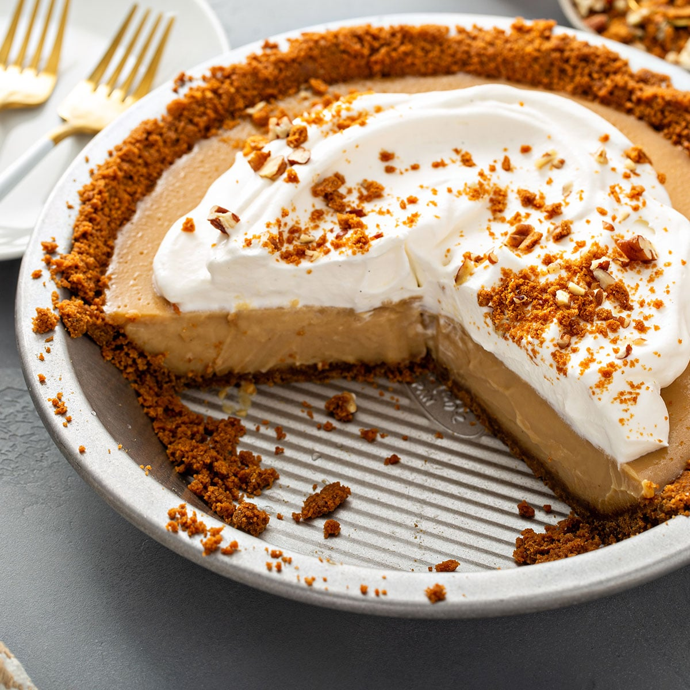

Although not much is known about the origin of this classic pie, it is typically associated with Midwestern and Southern American states. The pie is assembled with a pre-baked pastry shell that is filled with a butterscotch base—usually prepared with a combination of caramelized sugar, butter, milk, and eggs.
Meal prep time : 45 minutes
Servings : 8